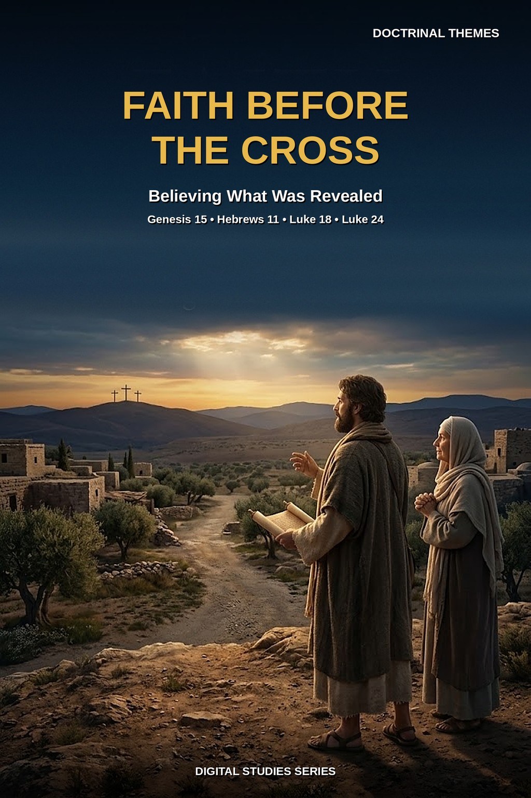
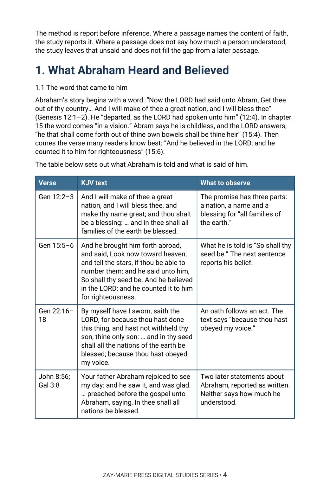

Faith Before the Cross
Believing What Was Revealed
What is each person or group before the Cross said to have believed, and what had been said to them?
Scripture speaks of faith long before the Cross. Abraham “believed in the LORD,” Israel “believed the LORD,” and Hebrews 11 lists a long line who acted “by faith.” Readers often read the Cross back into their lives, or suppose they believed something quite different.
This study reads Abraham, Israel at the exodus and in the wilderness, the prophets and psalmists, Hebrews 11, and the disciples in their own passages. It reports each text as written, notes who is addressed and what had been said to them, and holds to one order throughout: what the text says first, what it leaves unsaid second.
Read Each Passage Where Faith Is Reported
You will trace what Abraham is told in Genesis 12, 15, and 22 and what he is said to believe, follow “believed” and “believed not” through the exodus and the wilderness, and read the prophets’ and psalmists’ lines on faith in their settings. You will read Hebrews 11 line by line, compare what the disciples confess with what is said of their understanding, and test three common readings against the passages.
Readers who already own Study 54 (Justification), Study 15 (Faith and Works in James and Paul), or Study 43 (The Gospel of the Grace of God) will recognize adjoining ground. Study 54 traces justification as a verdict and the means by which it is received; this study does not take up that verdict and reads only passages before the Cross. Study 15 reads James 2 and Romans 4 each within its own audience; this study does not compare the two writers. Study 43 reads Paul’s gospel as the gospel of the grace of God; this study does not restate it and reports what the earlier passages say was said to those who believed. The question this study alone answers: what is each person or group before the Cross said to have believed, and what had been said to them?
How These Studies Relate
Study 75 reads the passages that report faith before the Cross in their own settings. The studies below supply the neighboring ground it deliberately does not repeat.
Digital Studies
Study 54 — Justification Trace justification as a legal verdict and the means by which it is received; Study 75 does not take up that verdict and reads only passages before the Cross.
Study 15 — Faith and Works in James and Paul Read James 2 and Romans 4 each within its own audience; Study 75 does not compare the two writers.
Study 43 — The Gospel of the Grace of God Read Paul’s gospel as the gospel of the grace of God; Study 75 does not restate it.
Commentary Series
Covenantal Commentary Series, Volume 1 — The Abrahamic Covenant Reads the covenant God swore to Abraham from Genesis to Paul and sets out its terms and oath; Study 75 records what Abraham and others are said to have believed before the Cross, each in its own setting.
Gospel Commentary Series, Volume 4 — What the Twelve Understood Argues that the Cross was hid from the Twelve before it was opened to them; Study 75 records what the disciples and earlier believers are said to have believed, passage by passage, without arguing a position beyond the text.
Follow Each Report of Faith Through Its Own Wording
What Abraham Heard
Trace what Abraham is told in Genesis 12, 15, and 22 and record exactly what he is said to believe and to do before reading any later comment on it.
“Believed” and “Believed Not”
Follow these verbs through Exodus, Numbers, and Psalm 106, noting what each group had seen or heard.
The Prophets and Psalmists
Read the lines on faith in Psalm 32, Isaiah 7 and 28, Habakkuk 2, and Jonah 3 in their own settings, with 1 Peter 1:10–12 on what the prophets searched.
Hebrews 11 as Written
Read the chapter line by line, recording what each person is said to have done by faith and what the chapter says they did and did not receive.
The Disciples
Compare what the disciples confess in Matthew 16 and John 1 with the passages that describe their understanding in Luke 18, John 20, and Luke 24.
Common Readings Tested
Test three common readings about faith before the Cross against the passages, and practice reporting hard texts exactly as written.
Read the Word in Its Context
Genesis 15:1–6
What Abraham is told, and what is said of him in return.
Exodus 14:30–31
What Israel saw at the sea, and the verse that reports their belief.
Numbers 20:7–13
The rock at Meribah and the words spoken to Moses and Aaron.
Habakkuk 2:2–4
The vision to be written, and the line on the just and faith.
1 Peter 1:10–12
What the prophets searched, and what was revealed to them.
Hebrews 11:1–16
The chapter’s definition of faith and its first examples, as written.
Luke 18:31–34
What Jesus tells the Twelve, and what the passage says of their understanding.
Luke 24:25–27
The risen Lord on the road, and what he expounded from the Scriptures.
A Rule for Reading These Passages
Where a passage does not say how much a person understood, the study leaves that unsaid and does not fill the gap from a later passage.
Report who is addressed, what had been said to them, and what is said to have followed.
Preview the Study Before You Purchase
Click any page to enlarge it for reading.



What Abraham Heard and Believed
See how the study begins with the word Abraham is told and reports it in the text’s own words.
A Focused Study of Faith Before the Cross
16-Page Digital PDF
Approved cover and 15-page numbered interior.
6 Teaching Sections
A text-driven study from Abraham to the disciples, with three common readings tested.
Callout Boxes
Five callout boxes marking the study’s key working rules.
KJV Tables
Six tables setting out the key passages for observation.
Scripture-Tracing Exercise
Guided traces through the passages the study relies on.
Guided Further Study
Four passage groups for deeper reading.
Review Questions
Five questions testing the study’s markers and method.
Final Synthesis Exercise
A written synthesis drawing the whole study together.
Faith Before the Cross
16-page digital PDF · For personal use